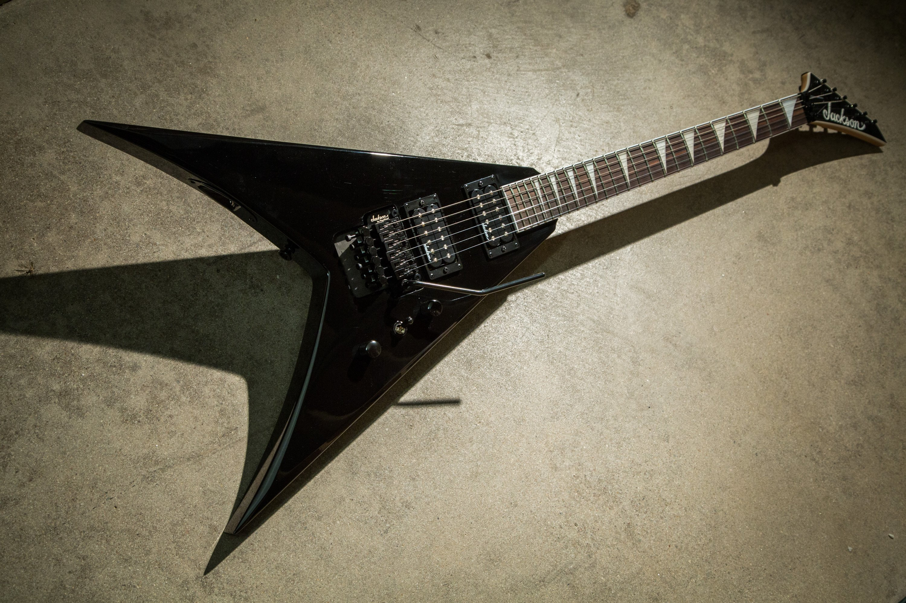

List of different metal genres:
The passionate, virtuoso, and forceful rock music genre known as heavy metal is a subgenre of rock music that started in the late 1960's. It's a kind of rock music that is heavily amplified, harsh-sounding, has a fast pace, and frequently uses violent or surreal images. Heavy metal consists of a number of similar styles including rock n' roll, blues rock, psychedelic rock and hard rock. Heavy metal is undoubtedly the most commercially successful rock music genre.
Led Zeppelin, Black Sabbath, and Deep Purple—often referred to as the "unholy trinity"—are regarded as the pioneers of heavy metal. Black Sabbath and Deep Purple both released significant albums in 1970, while Led Zeppelin released their self-titled debut a year prior.
From the late 1960's to the rest of the 20th century, a number of heavy heavy metal subgenres have emerged, examples being Thrash metal, death metal, black metal and doom metal. Heavy metal genres can occasionally blend together or be hard to separate, although they can be recognised by a number of characteristics. They may have different musical instruments, tempos, song structures, vocal and lyrical styles, guitar playing and drumming techniques, and other elements.
